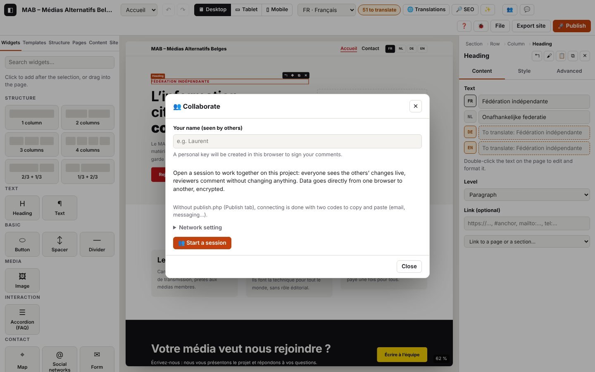

10. Collaborate

On this page
- 10.1 Hosting a session
- 10.2 Inviting someone (invite link)
- 10.3 Joining a session with a link
- 10.4 Joining with codes (no server)
- 10.5 Seeing where others are working (presence)
- 10.6 Editing together
- 10.7 Offline, then back
- 10.8 Leaving or closing the session
- 10.9 Refused invites (damaged, expired, forged)
- 10.10 Network setting (STUN server)
- 10.11 Diagnosing a connection that does not come up
- Codes in this chapter
The log extracts below were captured in French; codes and levels are identical in every language (the messages in your log are in the interface language).
Several people, each in their own browser, work on the same project live: the person who opens the session (the host) sends an invite link, and the others join it as an editor (can change everything) or a reviewer (comments only, see chapter 11). Data goes directly from one browser to the other (WebRTC, encrypted); publish.php only acts as a mailbox for connecting, with encrypted messages deleted after 15 minutes. Without publish.php, connecting is done with two codes to copy and paste.
Log domains
collab.*: the session (host, invite, join, leave, resume), verified identities, project synchronisation, presence, refusals.rtc.*: the direct WebRTC connection between two browsers (network addresses exchanged, ICE states, data channel). Never an IP address: only the type of the addresses (host,srflx,relay).signal.*: connecting (publish.php mailbox, manual codes, STUN setting).php.signal.*: what publish.php did with these messages, on the server side (see chapter 8).- Related:
store.remote(received changes applied),versions.*/version.*(safety version before joining),storage.secret-*(personal key and session state kept on the device).
What is never written to the log: the session key (the #join=… part of the link is masked), full invite links, connection codes (only their length chars), IP addresses, message content. Room identifiers (room) are shortened to 8 characters; fp is a person's public fingerprint (16 characters), not a secret.
The “collaboration” context: the copied log (🐞 → “Copy the log”) starts with a collaboration : {…} line that gives your role, the session status, how connecting is done (mailbox or codes), the STUN server, the number of verified participants and, for each WebRTC link, its states (ice, connexion, collecte, canal), the types of local and remote addresses and the network path used (paire). This is the first thing to look at when a connection does not come up.
10.1 Hosting a session
Goal: open a session on your project so that others can join it.
Steps
- (Recommended) Publish tab → OVH: enter the address of your publish.php (version 4). Without it, connecting will be done with codes (10.4).
- Click 👥 (top bar).
- Enter your name (seen by the others): a personal key is created in this browser, to prove your identity and sign your comments.
- Click 👥 Start a session.
What you see: “Session open: send an invite link.”, two links (editor and reviewer), the “Connect with codes” area and the “Participants (0)” list. The 👥 button becomes active.
Expected log (journaux/collab-heberger.log)
Technical details: expected log
05:08:26.254 +1.02s INFO collab.open Fenêtre « Travailler à plusieurs » {"state":"aucune session","peers":0,"identity":false,"publish":"oui"}
…
05:08:26.285 +1.05s INFO collab.identity.new Clé personnelle créée pour Kudoro {"fp":"IY4BOSk6K6wwsZ8i","did":"did:key:zDnaeypUHJMzxeWa"}
…
05:08:26.343 +1.11s INFO collab.host.start [collab.host#1] Ouverture d’une session de collaboration {"name":"Kudoro","fp":"IY4BOSk6K6wwsZ8i","resume":false}
…
05:08:26.355 +1.12s DEBUG signal.check Boîte aux lettres disponible (publish.php version 4) {"url":"http://127.0.0.1:8864/publish.php","version":"4","req":"c43a38c1"}
05:08:26.355 +1.12s INFO collab.host.signal [collab.host#1 · 12 ms] Mise en relation par la boîte aux lettres de publish.php {"via":"boîte aux lettres","url":"http://127.0.0.1:8864/publish.php"}
05:08:26.356 +1.12s INFO signal.host En attente des invités dans la boîte aux lettres de publish.php {"room":"b0d6c15c","peer":"caf096d817f96803","url":"http://127.0.0.1:8864/publish.php"}
05:08:26.356 +1.12s DEBUG signal.start Relève de la boîte aux lettres toutes les 2 s {"room":"b0d6c15c","peer":"caf096d817f96803","every":2000}
05:08:26.358 +1.12s DEBUG collab.invite.create Liens d’invitation créés (éditeur et relecteur, valables 7 jours) {"roles":["editor","reviewer"],"days":7,"via":"boîte aux lettres","chars":661}
05:08:26.358 +1.12s INFO collab.host.ok [collab.host#1 · 15 ms] Session ouverte : envoie un lien d’invitation {"room":"b0d6c15c","peer":"caf096d817f96803","docId":"doc_a20a22aa6f5e49c0","via":"boîte aux lettres","stun":"aucun"}Check: collab.host.start → signal.check (publish.php replies, with its version) → collab.host.signal “through the mailbox” → signal.host → collab.host.ok. via says how guests will find you; stun is the STUN server used (“aucun”, none, in the tests, which stay on the same machine).
Variants
| Situation | What changes on screen | Log |
|---|---|---|
| No publish.php address in Publish | the “Connect with codes” area is open | collab.host.signal “No publish.php address (Publish tab): connecting with codes”, collab.host.ok {"via":"codes"} |
Old publish.php, without a mailbox (its reply does not contain "signal":true) | same: codes | signal.unsupported (WARN) {"why":"trop ancien","version":"2"} then collab.host.signal “publish.php does not act as a mailbox” (extract: journaux/collab-heberger-codes.log) |
| publish.php unreachable (wrong address, hosting down, offline) | same: codes | net.fail (ERROR) then signal.unsupported (WARN) {"why":"injoignable"} |
| The address replies, but not in JSON (error page, PHP not run) | same: codes | signal.unsupported (WARN) {"why":"pas du JSON","status":…} |
| Personal key already created in this browser | no new key | collab.identity.load (DEBUG) instead of collab.identity.new; collab.identity.rename (INFO) if you change your name |
| You click “Start a session” again while a session is open | nothing changes | collab.host.already (DEBUG) |
| The page was reloaded during a session | “Your session was interrupted…” and “Resume session” | at start-up: collab.restore (INFO); on click: collab.resume.start … collab.resume.ok “Session resumed: guests can reconnect with the same links” |
Errors
| Situation | Message shown | Log | What to do |
|---|---|---|---|
| Name not entered yet | “Enter your name first.” | collab.no-identity (WARN) | type your name, then “Start a session” |
| Saved personal key unreadable | (none) a new key is created | collab.identity.invalid (WARN) | nothing: your old comments stay signed with the old key |
| Device storage unavailable (strict private browsing) | (none) | collab.identity.unreadable, collab.identity.unsaved, collab.save-fail (WARN) | the session works, but will not survive a reload |
| Unexpected error when opening | the error message | collab.host.fail (ERROR) with the error | send us the log |
10.2 Inviting someone (invite link)
Goal: give someone a way to join your session, with the right role.
Steps: in 👥, next to “✎ Editor invite” or “💬 Reviewer invite”, click Copy, then send the link (email, messaging).
What you see: “Link copied.”.
Expected log (journaux/collab-inviter.log)
Technical details: expected log
05:08:26.420 +1.18s INFO collab.invite.copy Lien d’invitation copié {"what":"data-copy-editor"}The links themselves are never written; collab.invite.create (when the session opens, 10.1) says that they exist, for which roles and for how many days.
Variants
| Situation | What changes | Log |
|---|---|---|
| The browser refuses access to the clipboard | “Link selected: copy it (Ctrl+C).” | collab.invite.copy-fail (WARN) |
Good to know: a link is valid for 7 days and contains the session key. It names your browser as the host: if you close the session (10.8) and then open a new one, you need to send new links.
10.3 Joining a session with a link
Goal: open the link you received and work on the host's project.
Steps
- Open the link in your browser (recent Chrome, Edge or Firefox).
- The “👥 Join a session” window says who is inviting you and for what. Enter your name.
- Click Join.
What you see: “Direct connection in progress…”, then “Project received from Kudoro.”: the host's project replaces yours (which is first saved in the versions). The host's badge appears at the top.
Expected log on the guest's side (journaux/collab-rejoindre-lien-invite.log)
Technical details: expected log
05:08:27.140 +0.07s INFO collab.join.link Lien d’invitation ouvert
…
05:08:27.404 +0.33s INFO collab.invite.open Invitation de Kudoro : éditeur {"role":"editor","owner":"Kudoro","ownerFp":"IY4BOSk6K6wwsZ8i","via":"boîte aux lettres","signal":"http://127.0.0.1:8864/publish.php","hours":168}
…
05:08:27.595 +0.52s INFO collab.identity.new Clé personnelle créée pour Ana {"fp":"Auvgw65qxQJFT3tl","did":"did:key:zDnaesex9gYkMWiC"}
05:08:27.599 +0.53s INFO collab.join.start [collab.join#1] Rejoindre une session {"name":"Ana","fp":"Auvgw65qxQJFT3tl","via":"boîte aux lettres"}
05:08:27.600 +0.53s DEBUG collab.join.invite [collab.join#1 · 1 ms] Invitation valable : Kudoro invite comme éditeur {"role":"editor","owner":"Kudoro","host":"caf096d817f96803","signal":"http://127.0.0.1:8864/publish.php","hours":168}
…
05:08:27.607 +0.53s DEBUG collab.join.backup [collab.join#1 · 8 ms] Projet actuel enregistré dans les versions avant de recevoir celui de l’hôte
05:08:27.608 +0.54s INFO rtc.join.start [rtc.join#1] Connexion à l’hôte caf096d817f96803 par la boîte aux lettres {"host":"caf096d817f96803","url":"http://127.0.0.1:8864/publish.php","room":"b0d6c15c"}
05:08:27.612 +0.54s DEBUG rtc.pc.create Connexion WebRTC créée (côté demande) {"side":"offer","label":"caf096d817f96803","stun":"aucun (réseau local seulement)"}
05:08:27.620 +0.55s DEBUG rtc.join.offer [rtc.join#1 · 12 ms] Demande de connexion créée : collecte des adresses réseau
…
05:08:31.620 +4.55s DEBUG rtc.ice.gather-timeout Collecte des adresses non terminée après 4 s : envoi des 1 adresse(s) trouvée(s) {"label":"caf096d817f96803","ms":4001,"local":{"host":1,"srflx":0,"relay":0,"prflx":0},"stun":"aucun"}
05:08:31.621 +4.55s INFO rtc.ice.no-stun Aucun serveur STUN : seules les adresses locales sont proposées (même réseau seulement) {"label":"caf096d817f96803"}
05:08:31.622 +4.55s DEBUG signal.post Dépôt d’un message chiffré « offer » pour caf096d817f96803 {"room":"b0d6c15c","from":"5ce63b23a9932966","to":"caf096d817f96803","t":"offer","bytes":922}
…
05:08:31.636 +4.56s INFO rtc.join.sent [rtc.join#1 · 4028 ms] Demande déposée dans la boîte aux lettres : en attente de la réponse de l’hôte {"local":{"host":1,"srflx":0,"relay":0,"prflx":0}}
05:08:31.636 +4.56s DEBUG signal.start Relève de la boîte aux lettres toutes les 1 s {"room":"b0d6c15c","peer":"5ce63b23a9932966","every":1000}
05:08:32.399 +5.33s DEBUG rtc.pc.state Connexion : établissement (ICE puis chiffrement DTLS) {"label":"caf096d817f96803","state":"connecting","ms":4787}
05:08:32.400 +5.33s DEBUG rtc.ice.state ICE : essai des chemins réseau entre les deux navigateurs {"label":"caf096d817f96803","state":"checking","ms":4788}
05:08:32.650 +5.58s DEBUG signal.receive 1 message(s) relevé(s) dans la boîte aux lettres {"room":"b0d6c15c","count":1,"from":["caf096d817f96803"]}
05:08:32.652 +5.58s DEBUG signal.stop Relève de la boîte aux lettres arrêtée {"room":"b0d6c15c","polls":2,"received":1}
05:08:32.654 +5.58s DEBUG rtc.ice.remote Adresses reçues de l’autre navigateur : 1 host {"label":"caf096d817f96803","type":"answer","remote":{"host":1,"srflx":0,"relay":0,"prflx":0}}
05:08:32.655 +5.58s INFO rtc.join.answer [rtc.join#1 · 5047 ms] Réponse de l’hôte reçue : ouverture du canal… {"remote":{"host":1,"srflx":0,"relay":0,"prflx":0}}
…
05:08:32.662 +5.59s INFO rtc.pair Chemin réseau utilisé : host ↔ host (udp) {"label":"caf096d817f96803","local":"host","remote":"host","protocol":"udp","rttMs":1,"ms":5049}
05:08:32.663 +5.59s INFO rtc.channel.open Canal de données ouvert avec caf096d817f96803 {"label":"caf096d817f96803","ms":5050}
05:08:32.663 +5.59s INFO rtc.join.ok [rtc.join#1 · 5055 ms] Liaison directe prête avec l’hôte {"ms":5051}
05:08:32.663 +5.59s DEBUG collab.link.new Nouveau lien : présentation (invité) {"label":"caf096d817f96803","links":1}
05:08:32.666 +5.59s INFO collab.join.ok [collab.join#1 · 5067 ms] Connecté·e à l’hôte : vérification des identités puis réception du projet {"role":"editor","room":"b0d6c15c"}
05:08:32.679 +5.61s DEBUG collab.hello Présentation de l’hôte Kudoro : c’est bien la personne qui a signé l’invitation {"name":"Kudoro","fp":"IY4BOSk6K6wwsZ8i","role":"owner"}
05:08:32.681 +5.61s INFO collab.auth Identité vérifiée : Kudoro (hôte) {"name":"Kudoro","fp":"IY4BOSk6K6wwsZ8i","role":"owner","peers":1}
05:08:32.683 +5.61s DEBUG collab.sync.ask Demande du projet à l’hôte {"docId":null,"known":0}
…
05:08:32.687 +5.61s INFO collab.snapshot Projet reçu de Kudoro {"docId":"doc_a20a22aa6f5e49c0","pages":2,"comments":0}Expected log on the host's side (journaux/collab-rejoindre-lien-hote.log)
Technical details: expected log
05:08:32.389 +7.15s DEBUG signal.receive 1 message(s) relevé(s) dans la boîte aux lettres {"room":"b0d6c15c","count":1,"from":["5ce63b23a9932966"]}
05:08:32.390 +7.15s INFO rtc.accept.start [rtc.accept#1] Demande de connexion reçue de 5ce63b23a9932966 {"from":"5ce63b23a9932966","via":"boîte aux lettres"}
05:08:32.393 +7.16s DEBUG rtc.pc.create Connexion WebRTC créée (côté réponse) {"side":"answer","label":"5ce63b23a9932966","stun":"aucun (réseau local seulement)"}
05:08:32.395 +7.16s DEBUG rtc.ice.remote Adresses reçues de l’autre navigateur : 1 host {"label":"5ce63b23a9932966","type":"offer","remote":{"host":1,"srflx":0,"relay":0,"prflx":0}}
05:08:32.397 +7.16s DEBUG rtc.accept.answer [rtc.accept#1 · 7 ms] Réponse créée : collecte des adresses réseau
05:08:32.397 +7.16s DEBUG rtc.ice.gathering Collecte des candidats : gathering {"label":"5ce63b23a9932966","state":"gathering","local":{"host":0,"srflx":0,"relay":0,"prflx":0}}
…
05:08:32.399 +7.16s DEBUG rtc.pc.state Connexion : établissement (ICE puis chiffrement DTLS) {"label":"5ce63b23a9932966","state":"connecting","ms":7}
…
05:08:32.403 +7.17s DEBUG rtc.ice.gathered Candidats trouvés : 1 host, 0 srflx, 0 relay {"label":"5ce63b23a9932966","ms":6,"local":{"host":1,"srflx":0,"relay":0,"prflx":0},"stun":"aucun"}
…
05:08:32.404 +7.17s DEBUG signal.post Dépôt d’un message chiffré « answer » pour 5ce63b23a9932966 {"room":"b0d6c15c","from":"caf096d817f96803","to":"5ce63b23a9932966","t":"answer","bytes":922}
…
05:08:32.412 +7.17s DEBUG php.signal.post Message chiffré déposé {"room":"b0d6c15c","from":"caf096d817f96803","to":"5ce63b23a9932966","bytes":922,"id":2,"new_room":false,"req":"dc4fb13f","srvMs":0.4}
…
05:08:32.412 +7.17s INFO rtc.accept.sent [rtc.accept#1 · 22 ms] Réponse déposée dans la boîte aux lettres : ouverture du canal… {"local":{"host":1,"srflx":0,"relay":0,"prflx":0}}
…
05:08:32.661 +7.42s INFO rtc.pair Chemin réseau utilisé : host ↔ host (udp) {"label":"5ce63b23a9932966","local":"host","remote":"host","protocol":"udp","rttMs":1,"ms":269}
05:08:32.665 +7.43s INFO rtc.channel.open Canal de données ouvert avec 5ce63b23a9932966 {"label":"5ce63b23a9932966","ms":272}
05:08:32.667 +7.43s INFO rtc.accept.ok [rtc.accept#1 · 277 ms] Liaison directe prête avec 5ce63b23a9932966 {"ms":274}
05:08:32.668 +7.43s DEBUG collab.link.new Nouveau lien : présentation (hôte) {"label":"5ce63b23a9932966","links":1}
05:08:32.672 +7.43s DEBUG collab.hello Présentation de Ana : invitation valable (éditeur, expire dans 168 h) {"name":"Ana","fp":"Auvgw65qxQJFT3tl","role":"editor"}
05:08:32.681 +7.44s INFO collab.auth Identité vérifiée : Ana (éditeur) {"name":"Ana","fp":"Auvgw65qxQJFT3tl","role":"editor","peers":1}
05:08:32.684 +7.45s INFO collab.sync.snapshot Envoi du projet complet à Ana {"name":"Ana","why":"nouveau participant","pages":2,"kb":12}
05:08:32.685 +7.45s DEBUG collab.presence Présence de Ana {"fp":"Auvgw65qxQJFT3tl","page":"p_l3wjjz84","selected":null}Check, in this order:
- Connecting (
signal.*): the guest drops off its request (signal.post“offer”,rtc.join.sent); the host picks it up (signal.receive) and replies (rtc.accept.sent); the guest picks up the answer (rtc.join.answer). - Direct connection (
rtc.*):rtc.ice.state“checking” then “connected”,rtc.pc.state“established and encrypted”,rtc.pair(the network path chosen),rtc.channel.open, thenrtc.join.ok/rtc.accept.ok. - Identities (
collab.*):collab.hello(the host checks the invite, the guest checks that the host is really the person who signed it),collab.authon both sides. - Project:
collab.sync.ask→collab.sync.snapshot(host) →collab.snapshot(guest).
The ms durations of the rtc.join.* steps show where the time goes: gathering the addresses (up to 4 s), waiting for the answer (checked every 1 to 2 s), opening the channel (a few hundred ms).
Variants
| Situation | What changes on screen | Log |
|---|---|---|
| Reviewer invite | “… invites you to review and comment on the site”; review mode | collab.readonly (INFO), see chapter 11 |
| You had already joined this session on this device | no safety version, the project is not copied again | collab.join.resume (INFO) instead of collab.join.backup, then collab.sync.ask “Asking for missed changes (resume)” |
| With a STUN server (default setting) and two different networks | — | rtc.ice.gathered with srflx ≥ 1; rtc.pair srflx ↔ srflx (or host ↔ srflx) |
| An old message is still lying in the mailbox | — | signal.ignored (DEBUG) “not the expected answer”: no consequence |
| Link cut off or damaged (incomplete copy) | nothing opens | collab.join.bad-link (WARN) |
Errors: see 10.9 (refused invites) and 10.11 (connection that does not come up).
| Situation | Message shown | Log | What to do |
|---|---|---|---|
| Empty name | “Enter your name.” | collab.join.no-name (WARN) | type your name |
| The host does not answer (session closed, host's tab closed or asleep) | “Connection failed: no answer: is the session still open on the other side?” (after 30 s) | signal.no-answer (WARN) then rtc.join.fail, collab.join.fail (ERROR) | ask the host to keep the tab open, or for a new link |
| Mailbox unreachable | “Connection failed: mailbox unreachable (Failed to fetch)” | signal.post-fail (WARN), rtc.join.fail (ERROR) — see 10.11 |
10.4 Joining with codes (no server)
Goal: connect when there is no publish.php (or it is too old): the two browsers exchange two codes by some other means (email, messaging).
Steps
- The guest opens the link, enters their name and clicks Join: a connection code appears (“1. Send this code to …”). They send it to the host.
- The host pastes it in 👥 → “Connect with codes” → Create the answer code, and sends the answer code back to the guest.
- The guest pastes the answer code (“2. Paste the answer code received here:”) → Connect.
What you see: on the guest's side, “Connected: receiving the project…” then the host's project.
Expected log on the guest's side (journaux/collab-codes-invite.log)
Technical details: expected log
05:09:07.869 +0.30s INFO collab.invite.open Invitation de Hôte manuel : relecteur {"role":"reviewer","owner":"Hôte manuel","ownerFp":"k6QfSYzzwQjiOdj2","via":"codes","hours":168}
…
05:09:07.973 +0.40s INFO collab.join.start [collab.join#1] Rejoindre une session {"name":"Relecteur manuel","fp":"3JKupVQgZWXUILKU","via":"codes"}
05:09:07.974 +0.40s DEBUG collab.join.invite [collab.join#1 · 1 ms] Invitation valable : Hôte manuel invite comme relecteur {"role":"reviewer","owner":"Hôte manuel","host":"fc0a98bbb7bd44e5","signal":"aucune (codes)","hours":168}
…
05:09:07.982 +0.41s INFO collab.join.ok [collab.join#1 · 9 ms] Session prête : échange de codes à faire {"role":"reviewer","room":"91f52fc6"}
05:09:07.982 +0.41s INFO rtc.manual-offer.start [rtc.manual-offer#1] Création du code de connexion (sans serveur) {"peer":"3c70f862c9c47449"}
05:09:07.987 +0.42s DEBUG rtc.pc.create Connexion WebRTC créée (côté demande) {"side":"offer","label":"manuel","stun":"aucun (réseau local seulement)"}
…
05:09:12.003 +4.43s DEBUG rtc.ice.gather-timeout Collecte des adresses non terminée après 4 s : envoi des 1 adresse(s) trouvée(s) {"label":"manuel","ms":4000,"local":{"host":1,"srflx":0,"relay":0,"prflx":0},"stun":"aucun"}
…
05:09:12.012 +4.44s INFO rtc.manual-offer.ok [rtc.manual-offer#1 · 4030 ms] Code de connexion prêt : à envoyer à l’hôte {"chars":932,"local":{"host":1,"srflx":0,"relay":0,"prflx":0}}
…
05:09:12.489 +4.92s INFO rtc.manual-finish.start [rtc.manual-finish#1] Connexion avec le code de réponse reçu {"chars":932}
…
05:09:12.556 +4.99s INFO rtc.manual-finish.start [rtc.manual-finish#2] Connexion avec le code de réponse reçu {"chars":896}
05:09:12.569 +5.00s DEBUG rtc.ice.remote Adresses reçues de l’autre navigateur : 1 host {"label":"manuel","type":"answer","remote":{"host":1,"srflx":0,"relay":0,"prflx":0}}
05:09:12.570 +5.00s INFO rtc.manual-finish.remote [rtc.manual-finish#2 · 14 ms] Code de réponse accepté : ouverture du canal… {"remote":{"host":1,"srflx":0,"relay":0,"prflx":0}}
…
05:09:12.571 +5.00s INFO rtc.channel.open Canal de données ouvert avec manuel {"label":"manuel","ms":4584}
05:09:12.571 +5.00s INFO rtc.manual-finish.ok [rtc.manual-finish#2 · 15 ms] Liaison directe prête avec l’hôte {"ms":4584}
…
05:09:12.575 +5.00s DEBUG collab.hello Présentation de l’hôte Hôte manuel : c’est bien la personne qui a signé l’invitation {"name":"Hôte manuel","fp":"k6QfSYzzwQjiOdj2","role":"owner"}
…
05:09:12.579 +5.01s INFO collab.auth Identité vérifiée : Hôte manuel (hôte) {"name":"Hôte manuel","fp":"k6QfSYzzwQjiOdj2","role":"owner","peers":1}
05:09:12.581 +5.01s DEBUG collab.sync.ask Demande du projet à l’hôte {"docId":null,"known":0}
…
05:09:12.591 +5.02s INFO collab.snapshot Projet reçu de Hôte manuel {"docId":"doc_fbff36c9667737fa","pages":2,"comments":0}(The first attempt rtc.manual-finish#1 in this extract is the “wrong code” error in the table below.)
Expected log on the host's side (journaux/collab-codes-hote.log)
Technical details: expected log
05:09:12.394 +5.82s INFO rtc.manual-answer.start [rtc.manual-answer#2] Code de connexion reçu : création du code de réponse {"chars":932}
05:09:12.399 +5.82s DEBUG rtc.pc.create Connexion WebRTC créée (côté réponse) {"side":"answer","label":"3c70f862c9c47449","stun":"aucun (réseau local seulement)"}
05:09:12.400 +5.83s INFO rtc.accept.start [rtc.accept#1] Demande de connexion par code de 3c70f862c9c47449 {"from":"3c70f862c9c47449","via":"codes"}
05:09:12.407 +5.83s DEBUG rtc.ice.remote Adresses reçues de l’autre navigateur : 1 host {"label":"3c70f862c9c47449","type":"offer","remote":{"host":1,"srflx":0,"relay":0,"prflx":0}}
…
05:09:12.427 +5.85s DEBUG rtc.ice.state ICE : essai des chemins réseau entre les deux navigateurs {"label":"3c70f862c9c47449","state":"checking","ms":29}
05:09:12.428 +5.85s DEBUG rtc.pc.state Connexion : établissement (ICE puis chiffrement DTLS) {"label":"3c70f862c9c47449","state":"connecting","ms":29}
05:09:12.429 +5.85s INFO rtc.ice.state ICE : un chemin réseau fonctionne {"label":"3c70f862c9c47449","state":"connected","ms":30}
…
05:09:12.430 +5.86s DEBUG rtc.ice.gathered Candidats trouvés : 1 host, 0 srflx, 0 relay {"label":"3c70f862c9c47449","ms":19,"local":{"host":1,"srflx":0,"relay":0,"prflx":0},"stun":"aucun"}
…
05:09:12.431 +5.86s INFO rtc.manual-answer.ok [rtc.manual-answer#2 · 37 ms] Code de réponse prêt : à renvoyer à l’invité {"chars":896,"local":{"host":1,"srflx":0,"relay":0,"prflx":0}}
05:09:12.565 +5.99s INFO rtc.pc.state Connexion : établie et chiffrée {"label":"3c70f862c9c47449","state":"connected","ms":166}
05:09:12.566 +5.99s INFO rtc.pair Chemin réseau utilisé : host ↔ host (udp) {"label":"3c70f862c9c47449","local":"host","remote":"host","protocol":"udp","rttMs":1,"ms":167}
05:09:12.567 +5.99s INFO rtc.channel.open Canal de données ouvert avec 3c70f862c9c47449 {"label":"3c70f862c9c47449","ms":169}
05:09:12.568 +5.99s INFO rtc.accept.ok [rtc.accept#1 · 168 ms] Liaison directe prête avec 3c70f862c9c47449 {"ms":169}Check: rtc.manual-offer.ok (code ready, chars ≈ 900), rtc.manual-answer.ok (answer ready), then rtc.manual-finish.ok and rtc.accept.ok. After that, everything happens as in 10.3 (collab.auth, collab.snapshot). The collab.join flow ends straight away (“Session ready: codes to exchange”): the connection itself is followed by rtc.manual-*.
Errors
| Situation | Message shown | Log | What to do |
|---|---|---|---|
| Incomplete code (cut-off copy) or modified code | host: “Code not recognised: unreadable code: incomplete, modified or created for another session” | signal.code-invalid (WARN) {"chars":80} then rtc.manual-answer.fail (ERROR) (journaux/collab-codes-incomplet.log) | copy the whole code again (a code is about 900 characters long) |
| Code from another session | same | same | use the code from this invite |
| The guest pastes their own code instead of the answer | “Failed: This code is not an answer from this session.” | signal.code-wrong (WARN) {"got":"offer","expected":"answer"} then rtc.manual-finish.fail (journaux/collab-codes-mauvais.log) | paste the code received from the host |
| The host pastes an answer code instead of a request | “Code not recognised: This code is not a connection request from this session.” | signal.code-wrong (WARN), rtc.manual-answer.fail | paste the code received from the guest |
| The codes are right but the connection does not open | “Failed: the direct connection did not succeed…” (20 s) | rtc.channel.timeout (WARN) with the cause, rtc.manual-finish.fail; on the host's side rtc.accept.fail after 3 minutes | see 10.11: the codes replace the mailbox, not the crossing of internet routers |
rtc.manual-cancel (INFO) records a connection with codes abandoned by the program.
10.5 Seeing where others are working (presence)
Goal: know who is there and which element they are working on.
Steps: nothing to do. The participants' badges are at the top; click a badge to go to where that person is working.
What you see: a frame in the person's colour, with their name, around the element they have selected; in the inspector, “✎ Ana is also working on …”.
Expected log (on the host's side, when Ana selects a heading; journaux/collab-presence.log)
Technical details: expected log
05:08:33.752 +8.52s DEBUG collab.presence Présence de Ana {"fp":"Auvgw65qxQJFT3tl","page":"p_hlwzd6p4","selected":"n_5b6g691i2o"}page and selected say where the person is. One collab.presence line per change of selection or page (DEBUG).
10.6 Editing together
Goal: every change reaches the others, without overwriting theirs.
Steps: edit as usual. Undo (Ctrl+Z) only removes your own changes.
What you see: the others' page updates in less than a second.
Expected log on the side of the person making the change (journaux/collab-modification-hote.log)
Technical details: expected log
05:08:33.929 +8.69s DEBUG store.commit Modification {"key":"n_5b6g691i2o:text:fr","source":"inspector","past":3,"page":"p_hlwzd6p4"}
05:08:33.935 +8.70s DEBUG collab.ops.out 1 modification(s) envoyée(s) à 1 participant(s) {"n":1,"to":1}… and on the others' side (journaux/collab-modification-invite.log)
Technical details: expected log
05:08:33.937 +6.86s DEBUG collab.ops.in 1 modification(s) de Kudoro appliquée(s) {"name":"Kudoro","received":1,"applied":1}
05:08:33.939 +6.87s DEBUG store.remote Modifications d’un autre participant appliquées {"ops":1,"history":0}
05:08:33.945 +6.87s DEBUG canvas.render Canevas mis à jour sans rechargement (en-tête, contenu, pied, styles) {"source":"remote","mode":"contenu","ms":4}n = number of operations, to = verified participants who receive them. On the host's side, a guest's changes are passed on to the others (collab.ops.relay, TRACE).
Variants
| Situation | Log |
|---|---|
| Two people change the same field at the same time | the most recent one wins everywhere: collab.ops.in “… (1 already known or older)” on the side of the person whose change lost |
| The field you are editing is changed by someone else | inspector.remote-deferred: the inspector redraws when you leave the field |
| Changes arrive before the project (resume in progress) | collab.ops.early (DEBUG): ignored, they come back with the resume |
Errors
| Situation | Message shown | Log | What to do |
|---|---|---|---|
| A reviewer (or a program) sends a change | host: “Change refused (Laurent, reviewer): …” | collab.ops.rejected (WARN) on the host's side, collab.remote-error on the sender's side — see chapter 11 | normal for a reviewer |
| Damaged message or one from another version of Atelier | (none) | rtc.recv.invalid, collab.message-invalid (WARN), collab.message-unknown (DEBUG) | update Atelier on both sides |
| Error while applying a message (bug) | “Collaboration: …” | collab.message-fail (ERROR) with the stack | send us the log from both sides |
10.7 Offline, then back
Goal: keep working when the connection is lost (tab closed, computer asleep, network lost), then merge everything.
Steps
- Keep editing: your changes are kept and tracked.
- To resume: reopen the invite link (guest) or 👥 → Resume session (host, after a reload).
What you see: after reconnecting, your changes reach the others, and theirs reach you.
Expected log on the host's side when the guest leaves (journaux/collab-depart-hote.log)
Technical details: expected log
05:08:50.343 +25.11s WARN rtc.ice.state ICE : chemin réseau perdu (coupure, veille, changement de réseau) ; WebRTC réessaie {"label":"5ce63b23a9932966","state":"disconnected","ms":17950}
05:08:50.344 +25.11s WARN rtc.pc.state Connexion : interrompue, tentative de reprise {"label":"5ce63b23a9932966","state":"disconnected","ms":17951}
05:08:50.344 +25.11s INFO rtc.channel.close Canal de données fermé avec 5ce63b23a9932966 {"label":"5ce63b23a9932966","pc":"disconnected","ice":"disconnected","sent":14,"received":7}
05:08:50.345 +25.11s INFO collab.link.closed Lien fermé avec Ana {"name":"Ana","fp":"Auvgw65qxQJFT3tl","role":"editor","authed":true,"left":1}
05:08:50.345 +25.11s INFO collab.peer.leave Ana a quitté la session {"fp":"Auvgw65qxQJFT3tl","role":"editor"}On the side of the guest who comes back (journaux/collab-hors-ligne-retour.log)
Technical details: expected log
05:08:50.830 +0.13s DEBUG collab.identity.load Clé personnelle chargée : Ana {"fp":"Auvgw65qxQJFT3tl"}
05:08:50.832 +0.13s INFO collab.restore Session interrompue retrouvée (éditeur) : rouvre le lien d’invitation pour te reconnecter {"role":"editor","docId":"doc_a20a22aa6f5e49c0","host":"Kudoro","via":"boîte aux lettres"}
…
05:08:51.448 +0.74s DEBUG store.commit Modification {"key":"n_2h541z3c37:label:fr","source":"inspector","past":1,"page":"p_hlwzd6p4"}
05:08:51.456 +0.75s DEBUG collab.ops.out 1 modification(s) envoyée(s) à 0 participant(s) {"n":1,"to":0}
05:08:52.368 +1.67s INFO collab.join.link Lien d’invitation ouvert
…
05:08:52.437 +1.73s INFO collab.join.start [collab.join#1] Rejoindre une session {"name":"Ana","fp":"Auvgw65qxQJFT3tl","via":"boîte aux lettres"}
…
05:08:52.439 +1.74s INFO collab.join.rejoin [collab.join#1 · 2 ms] Même session qu’avant : reconnexion, les modifications faites entre-temps seront fusionnées {"docId":"doc_a20a22aa6f5e49c0"}
05:08:52.440 +1.74s INFO rtc.join.start [rtc.join#1] Connexion à l’hôte caf096d817f96803 par la boîte aux lettres {"host":"caf096d817f96803","url":"http://127.0.0.1:8864/publish.php","room":"b0d6c15c"}
…
05:08:56.471 +5.77s INFO rtc.join.sent [rtc.join#1 · 4031 ms] Demande déposée dans la boîte aux lettres : en attente de la réponse de l’hôte {"local":{"host":1,"srflx":0,"relay":0,"prflx":0}}
…
05:08:56.479 +5.78s DEBUG signal.ignored Message « answer » ignoré (pas la réponse attendue) {"from":"caf096d817f96803","t":"answer"}
…
05:08:57.490 +6.79s INFO rtc.join.answer [rtc.join#1 · 5050 ms] Réponse de l’hôte reçue : ouverture du canal… {"remote":{"host":1,"srflx":0,"relay":0,"prflx":0}}
…
05:08:57.499 +6.80s INFO rtc.join.ok [rtc.join#1 · 5059 ms] Liaison directe prête avec l’hôte {"ms":5053}
…
05:08:57.503 +6.80s INFO collab.join.ok [collab.join#1 · 5066 ms] Reconnecté·e : vérification des identités puis reprise {"role":"editor"}
…
05:08:57.516 +6.81s INFO collab.auth Identité vérifiée : Kudoro (hôte) {"name":"Kudoro","fp":"IY4BOSk6K6wwsZ8i","role":"owner","peers":1}
05:08:57.518 +6.82s DEBUG collab.sync.ask Demande des modifications manquées (reprise) {"docId":"doc_a20a22aa6f5e49c0","known":2}
05:08:57.542 +6.84s DEBUG collab.ops.in 4 modification(s) de Kudoro appliquée(s) {"name":"Kudoro","received":4,"applied":4,"review":4}
…
05:08:57.555 +6.85s INFO review.remote Commentaire reçu de Laurent {"id":"cm_e_pChwMPXbaY","fp":"7ylCE0KoKaMHlDzu","page":"p_hlwzd6p4","node":"n_21063j4e5p"}
05:08:57.556 +6.85s INFO collab.sync.merged Reprise : 4 modification(s) reçue(s), 1 envoyée(s) à l’hôte {"in":4,"out":1}On the host's side (journaux/collab-hors-ligne-hote.log)
Technical details: expected log
05:08:56.559 +31.32s INFO rtc.accept.start [rtc.accept#3] Demande de connexion reçue de 5ce63b23a9932966 {"from":"5ce63b23a9932966","via":"boîte aux lettres"}
…
05:08:57.501 +32.26s INFO rtc.accept.ok [rtc.accept#3 · 942 ms] Liaison directe prête avec 5ce63b23a9932966 {"ms":940}
…
05:08:57.513 +32.28s INFO collab.auth Identité vérifiée : Ana (éditeur) {"name":"Ana","fp":"Auvgw65qxQJFT3tl","role":"editor","peers":2}
05:08:57.523 +32.29s INFO collab.sync.delta Reprise de Ana : 4 modification(s) manquée(s) envoyée(s) {"name":"Ana","ops":4}
05:08:57.563 +32.33s DEBUG collab.ops.in 1 modification(s) de Ana appliquée(s) {"name":"Ana","received":1,"applied":1}Check: collab.restore at start-up (the session is found again), collab.ops.out “… to 0 participant(s)” during the outage, collab.join.rejoin, then collab.sync.delta (host: what the guest missed) and collab.sync.merged (guest: received / sent).
Variants
| Situation | What changes | Log |
|---|---|---|
| Short outage (Wi-Fi dropping out) | nothing if the network comes back quickly | rtc.ice.state “disconnected” (WARN) then “connected” (INFO) |
| The guest's tab is closed | the host sees the badge disappear after a few seconds | rtc.ice.state “disconnected”, rtc.channel.close, collab.link.closed, collab.peer.leave; 20 to 30 s later rtc.lost (INFO) |
| The guest loses the host | “Connection with the host interrupted. Reopen the invite link…” | collab.host-lost (WARN) |
| Your browser goes offline | — | app.offline (WARN), then app.online (INFO) |
| Resume after a reload, but personal key lost | no resume | collab.restore-no-identity (WARN) |
| Saved session state unreadable | no resume | collab.restore-unreadable or collab.restore-fail (WARN) |
10.8 Leaving or closing the session
Goal: disconnect (guest) or end the session for everyone (host).
Steps: 👥 → Leave session (guest) or Close session (host).
What you see: “You have left the session.” / “Session closed.”; the badges disappear. After the host closes the session, their old links no longer work.
Expected log (guest who leaves) (journaux/collab-quitter.log)
Technical details: expected log
05:08:58.356 +7.65s INFO storage.secret-write Secret gardé sur cet appareil (jamais dans le projet) {"name":"collab-session"}
…
05:08:58.552 +7.85s INFO collab.open Fenêtre « Travailler à plusieurs » {"state":"editor","peers":1,"identity":true,"publish":"oui"}
…
05:08:58.608 +7.91s INFO collab.leave Session quittée {"role":"editor","peers":1,"room":"b0d6c15c"}
05:08:58.608 +7.91s DEBUG collab.node.close Fermeture de 1 lien(s) {"links":1}
…
05:08:58.642 +7.94s INFO rtc.channel.close Canal de données fermé avec caf096d817f96803 {"label":"caf096d817f96803","pc":"closed","ice":"closed","sent":6,"received":6}Host who closes (journaux/collab-fermer.log)
Technical details: expected log
05:09:56.289 +91.05s INFO collab.leave Session fermée par l’hôte {"role":"owner","peers":1,"room":"b0d6c15c"}
05:09:56.290 +91.05s DEBUG signal.stop Relève de la boîte aux lettres arrêtée {"room":"b0d6c15c","polls":45,"received":4}
05:09:56.290 +91.05s DEBUG collab.node.close Fermeture de 1 lien(s) {"links":1}
…
05:09:56.317 +91.08s INFO rtc.channel.close Canal de données fermé avec f8f466bc22c8391f {"label":"f8f466bc22c8391f","pc":"closed","ice":"closed","sent":12,"received":10}signal.stop gives the number of times the mailbox was checked (polls) and the number of messages received during the session. On the guests' side: rtc.channel.close then collab.host-lost.
10.9 Refused invites (damaged, expired, forged)
Goal: understand why a link is refused. Every invite is signed with the host's key: nobody can change it, or make one up for someone else's session.
What you see: in “Join a session”, the error message instead of the explanation, and the Join button disabled.
Expected log (journaux/collab-invitation-invalide.log: a damaged link, then an expired link)
Technical details: expected log
05:08:59.542 +0.38s INFO collab.join.link Lien d’invitation ouvert
…
05:08:59.545 +0.38s WARN collab.invite.invalid Invitation refusée : Signature de l’invitation invalide. {"reason":"Signature de l’invitation invalide."}
…
05:08:59.644 +0.48s WARN collab.invite.invalid Invitation refusée : Invitation expirée : demandez un nouveau lien. {"reason":"Invitation expirée : demandez un nouveau lien."}Forged link (signed with another key, with the right session key): it passes the local check, but the host refuses it. On the host's side (journaux/collab-invitation-falsifiee-hote.log):
Technical details: expected log
05:09:04.860 +39.62s INFO rtc.accept.ok [rtc.accept#4 · 256 ms] Liaison directe prête avec 0ee363a37b8fc4bd {"ms":255}
…
05:09:04.866 +39.63s WARN collab.refused.owner Invitation de Faussaire refusée : signée par une autre clé que celle de l’hôte (lien falsifié ou d’une autre session) {"name":"Faussaire","fp":"8LokG_rg9pxAbkhj","signer":"HN1kxpRtekQIIImT","signerName":"Faussaire"}
…
05:09:04.877 +39.64s WARN collab.remote-error L’autre côté signale : Hôte inconnu : ce n’est pas la personne qui a envoyé l’invitation. {"from":"0ee363a37b8fc4bd","message":"Hôte inconnu : ce n’est pas la personne qui a envoyé l’invitation."}On the guest's side (journaux/collab-invitation-falsifiee-invite.log):
Technical details: expected log
05:08:59.695 +0.53s INFO collab.invite.open Invitation de Faussaire : éditeur {"role":"editor","owner":"Faussaire","ownerFp":"HN1kxpRtekQIIImT","via":"boîte aux lettres","signal":"http://127.0.0.1:8864/publish.php","hours":168}
…
05:09:04.862 +5.70s INFO rtc.join.ok [rtc.join#1 · 5076 ms] Liaison directe prête avec l’hôte {"ms":5070}
…
05:09:04.866 +5.71s INFO collab.join.ok [collab.join#1 · 5089 ms] Connecté·e à l’hôte : vérification des identités puis réception du projet {"role":"editor","room":"b0d6c15c"}
05:09:04.868 +5.71s WARN collab.refused.host Hôte inconnu : Kudoro n’est pas la personne qui a signé l’invitation (Faussaire) {"name":"Kudoro","fp":"IY4BOSk6K6wwsZ8i","expected":"HN1kxpRtekQIIImT"}
…
05:09:04.886 +5.72s WARN collab.remote-error L’autre côté signale : Invitation refusée : elle n’a pas été créée par cette session. {"from":"caf096d817f96803","message":"Invitation refusée : elle n’a pas été créée par cette session."}The direct connection comes up (rtc.join.ok): it is the identity check (collab.refused.*) that closes the link.
Errors
| Situation | Message shown | Log | What to do |
|---|---|---|---|
| Damaged link (character changed or cut off) | “Invalid invite signature.” or “Unreadable invite.” | collab.invite.invalid (WARN) reason | copy the whole link again |
| Link older than 7 days | “Invite expired: ask for a new link.” | collab.invite.invalid (WARN) | ask for a new link |
| Link from another session (different session key) | “Invite for another session.” | collab.invite.invalid (WARN) | ask for the right link |
| Forged link or one from an old session of the host | host: “Invite refused: it was not created by this session.”; guest: “Unknown host: …” | host: collab.refused.owner (WARN); guest: collab.refused.host (WARN) and collab.remote-error | do not use this link; the host sends a new link |
| The invite is refused by the host (expired in the meantime…) | “Invite refused (Ana): …” | collab.refused.invite (WARN) | new link |
| Public key and fingerprint do not match | “Invalid identity: connection refused.” | collab.refused.identity (WARN) | other version of Atelier or attempted fraud |
| Invalid proof of identity | “Invalid proof of identity: connection refused.” | collab.refused.auth (WARN) | same |
| The other side does not answer the introduction (15 s) | (none) | collab.hello.timeout (WARN) | different versions of Atelier: update |
Internal details: collab.hello.retry, collab.hello.again, collab.auth.early (TRACE) follow the introduction; collab.send-fail and collab.close-fail (WARN) record a refusal that could not be passed on to a link that was already closed; collab.snapshot-refused (WARN) a full project received from a participant who is not the host (ignored).
10.10 Network setting (STUN server)
Goal: choose the STUN server, which helps each browser discover its public address to get through internet routers.
Steps: 👥 (with no session open) → Network setting → “STUN server” field. Default: stun:stun.l.google.com:19302. Empty = local network only. Several addresses separated by spaces.
Expected log (journaux/collab-stun-regle.log)
Technical details: expected log
05:09:19.758 +0.43s INFO signal.stun Serveur STUN réglé : 1 adresse(s) valable(s) {"stun":"stun:127.0.0.1:9 turn:relais.exemple.be:3478","valid":["stun:127.0.0.1:9"],"ignored":["turn:relais.exemple.be:3478"]}At the next connection, rtc.pc.create shows the servers used (stun).
Variants and errors
| Situation | Log | What to do |
|---|---|---|
| Field emptied | signal.stun “STUN server cleared: connection only possible on the same local network”; at each connection rtc.ice.no-stun (INFO) | put the default value back to work between two homes |
turn: address or mistyped address | signal.stun with ignored, then rtc.stun-ignored (WARN) “only “stun:host:port” servers are supported (no TURN yet)” | see 10.11, “When do you need a TURN server?” |
| Storage unavailable | signal.stun-unreadable, signal.stun-unsaved (WARN) | the default setting is used |
10.11 Diagnosing a connection that does not come up
When “Join” fails or gets stuck, try again on both sides, then copy the log (🐞 → “Copy the log”) on the host's side and on the guest's side, and send both. The collaboration : {…} line at the top gives the state of each link (liens).
The three stages of a connection
- Connecting (
signal.*): the two browsers exchange a “request” and an “answer” that describe their network addresses, through the publish.php mailbox (or with the codes). If this fails, nothing else is tried. - Direct connection (
rtc.*): each browser tries the other's addresses (ICE), then encrypts the link (DTLS) and opens the data channel. - Identity check (
collab.*): invite, signature, role. A refusal here is not a network problem (see 10.9).
Reading signal.*: the mailbox
| Line | Meaning |
|---|---|
signal.check (DEBUG) | publish.php replies and acts as a mailbox (version) |
signal.host / signal.start | the host (or the guest) checks the mailbox every 2 s (1 s); each check is at TRACE level (signal.poll, net.request) |
signal.post | an encrypted message is dropped off (t = offer or answer, bytes); on the server side php.signal.post |
signal.receive | messages were picked up; signal.decrypt (TRACE) for each one |
signal.ignored, signal.duplicate | unrelated message (old, already handled): harmless |
signal.no-answer (WARN) | the guest received no answer within 30 s: the host's tab is closed or asleep, or the link comes from an old session |
signal.post-fail (WARN) | cannot drop off the message: publish.php stopped, moved, or offline |
signal.post-refused (WARN) | publish.php refused the message (status 400: invalid, 413: too large, 429: too many sessions); on the server side php.signal.invalid, php.signal.too-big, php.signal.full |
signal.poll-fail (WARN) | checking the mailbox fails (on the 1st failure, then every 10th); signal.poll-retry (TRACE) in between, signal.recovered (INFO) when it comes back |
signal.not-json (WARN) | the reply is not JSON: hosting error page, PHP not run |
signal.decrypt-fail (WARN) | a message cannot be decrypted with the session key: other session, modified link |
signal.handle-fail (ERROR) | a decrypted message could not be handled (bug) |
signal.unsupported (WARN) | when the session opens: no mailbox (why: injoignable (unreachable), pas du JSON (not JSON), trop ancien (too old)) → codes |
Example: publish.php stopped after the invite was sent. On the guest's side (journaux/collab-boite-injoignable.log):
Technical details: expected log
05:09:14.817 +0.47s INFO rtc.join.start [rtc.join#1] Connexion à l’hôte 22f2325e97fc0ca4 par la boîte aux lettres {"host":"22f2325e97fc0ca4","url":"http://127.0.0.1:8964/publish.php","room":"abd801f6"}
05:09:14.828 +0.48s DEBUG rtc.join.offer [rtc.join#1 · 11 ms] Demande de connexion créée : collecte des adresses réseau
05:09:18.830 +4.49s DEBUG signal.post Dépôt d’un message chiffré « offer » pour 22f2325e97fc0ca4 {"room":"abd801f6","from":"dd853837fd8f5383","to":"22f2325e97fc0ca4","t":"offer","bytes":919}
…
05:09:18.834 +4.49s ERROR net.fail POST 127.0.0.1:8964/publish.php : Failed to fetch (réseau, CORS ou adresse injoignable) {"id":1,"url":"http://127.0.0.1:8964/publish.php?atelier_debug=1","ms":3,"online":true,"error":{"name":"TypeError","message":"Failed to fetch","stack":"TypeError: Failed to fetch\nat atelierFetch (http://localhost:8791/editor/log.js:181:21)\nat Mailbox.post (http://localhost:8791/editor/collab-ne…
05:09:18.834 +4.49s WARN signal.post-fail Boîte aux lettres injoignable : publish.php arrêté ou déplacé, hors ligne, ou requête bloquée (Failed to fetch) {"url":"http://127.0.0.1:8964/publish.php","t":"offer","online":true,"error":{"name":"TypeError","message":"Failed to fetch","stack":"TypeError: Failed to fetch\nat atelierFetch (http://localhost:8791/editor/log.js:181:21)\nat Mailbox.post (http://localhost:8791/ed…
05:09:18.835 +4.49s ERROR rtc.join.fail [rtc.join#1 · 4018 ms] boîte aux lettres injoignable (Failed to fetch) {"label":"22f2325e97fc0ca4","ice":"new","pc":"new","gathering":"gathering","local":{"host":1,"srflx":0,"relay":0,"prflx":0},"remote":null,"stun":[],"ms":4014,"error":{"name":"Error","message":"boîte aux lettres injoignable (Failed to fetch)","stack":"Error: boîte aux lettres injoignable (Failed to fetch)\nat…
05:09:18.835 +4.49s ERROR collab.join.fail [collab.join#1 · 4026 ms] boîte aux lettres injoignable (Failed to fetch) {"error":{"name":"Error","message":"boîte aux lettres injoignable (Failed to fetch)","stack":"Error: boîte aux lettres injoignable (Failed to fetch)\nat Mailbox.post (http://localhost:8791/editor/collab-net.js:284:27)\nat async joinViaMailbox (http://localhost:8791/editor/collab-net.js:407:5)\nat async…On the host's side, checking the mailbox fails too (journaux/collab-boite-injoignable-hote.log):
Technical details: expected log
05:09:15.508 +2.53s ERROR net.fail GET 127.0.0.1:8964/publish.php : Failed to fetch (réseau, CORS ou adresse injoignable) {"id":3,"url":"http://127.0.0.1:8964/publish.php?signal=abd801f676466fc4f00ab45d04392531996e3984e4c317df6d0b4a7db08b2243&peer=22f2325e97fc0ca4&after=0&atelier_debug=1","ms":2,"online":true,"error":{"name":"TypeError","message":"Failed to fetch","stack":"TypeError: Failed to fetch\nat atelierFetch …
05:09:15.509 +2.53s WARN signal.poll-fail Boîte aux lettres injoignable : Failed to fetch {"url":"http://127.0.0.1:8964/publish.php","failures":1,"online":true,"error":{"name":"TypeError","message":"Failed to fetch","stack":"TypeError: Failed to fetch\nat atelierFetch (http://localhost:8791/editor/log.js:181:21)\nat tick (http://localhost:8791/editor/collab-net.js:299:25)"}}What to do: open the publish.php address in the browser (it must show {"atelier":true,…,"signal":true}); check that you are online; otherwise use the codes (10.4).
Reading rtc.*: the direct connection
The addresses (ICE candidates). Each browser offers addresses of three types:
| Type | Meaning | Where it comes from |
|---|---|---|
host | address on the local network (often masked by the browser as ….local) | the network card; only works on the same network |
srflx | public address as seen from the Internet, through the router | the STUN server; needed between two homes (Japan ↔ Belgium) |
relay | address on a relay server | a TURN server (not yet supported by Atelier) |
prflx | address discovered during the checks | the checks themselves |
rtc.ice.gathered(DEBUG): addresses found by this browser (local).rtc.ice.gather-timeout: gathering took more than 4 s; Atelier sends what it has (WARN if nosrflxwas found although a STUN server is set, DEBUG otherwise).rtc.ice.no-srflx(WARN): no public address despite the STUN server: the STUN server is unreachable or UDP is blocked. Between two different networks, the connection will fail.rtc.ice.no-stun(INFO): no STUN server set, only local addresses.rtc.ice.remote(DEBUG): addresses received from the other side (remote).rtc.ice.error(DEBUG, then TRACE): a STUN server did not answer from one interface (code701: unreachable). Common with IPv6 and harmless ifsrflx≥ 1.rtc.ice.candidate(TRACE): each address found, with its type and protocol.
The ICE states (rtc.ice.state):
| State | Meaning | Level |
|---|---|---|
new | not started yet (no address from the other side to try) | DEBUG |
checking | trying the address pairs | DEBUG |
connected | a pair works | INFO |
completed | checks finished, the best pair is chosen | INFO |
disconnected | the pair no longer answers (outage, sleep, network change); WebRTC retries for a few seconds | WARN |
failed | no pair works | WARN |
closed | connection closed | DEBUG |
The connection state (rtc.pc.state: connecting → connected = ICE and DTLS encryption succeeded; failed, disconnected, closed). rtc.ice.gathering follows the gathering (gathering → complete). rtc.pc.create records each new connection and its STUN servers.
When all goes well: rtc.pair (INFO) says which path was chosen (host ↔ host: same network; srflx ↔ srflx or host ↔ srflx: through the routers; relay: through a relay) and the round-trip time rttMs. Then rtc.channel.open. rtc.pair-unknown (DEBUG) and rtc.stats-fail (WARN) only report incomplete statistics.
When it fails: after 20 s on the guest's side (30 s on the host's side, 3 minutes with codes), rtc.channel.timeout (WARN) gives the probable cause, worked out from the addresses exchanged; if WebRTC gives up before that, it is rtc.failed (WARN), with the same analysis. Example: STUN unreachable on both sides, and not on the same network (simulated in the tests by removing the other side's addresses) — on the guest's side (journaux/collab-echec-ice.log):
Technical details: expected log
05:09:21.162 +0.51s INFO rtc.join.start [rtc.join#1] Connexion à l’hôte 579ffa49deb17308 par la boîte aux lettres {"host":"579ffa49deb17308","url":"http://127.0.0.1:8864/publish.php","room":"9623d1e2"}
05:09:21.175 +0.52s DEBUG rtc.pc.create Connexion WebRTC créée (côté demande) {"side":"offer","label":"579ffa49deb17308","stun":["stun:127.0.0.1:9"]}
…
05:09:25.193 +4.54s WARN rtc.ice.gather-timeout Collecte des adresses non terminée après 4 s : envoi des 1 adresse(s) trouvée(s) (serveur STUN lent ou injoignable ?) {"label":"579ffa49deb17308","ms":4000,"local":{"host":1,"srflx":0,"relay":0,"prflx":0},"stun":["stun:127.0.0.1:9"]}
05:09:25.194 +4.54s WARN rtc.ice.no-srflx Aucune adresse publique obtenue (pas de candidat srflx) : serveur STUN injoignable ou UDP bloqué ; la connexion ne marchera que sur le même réseau {"label":"579ffa49deb17308","stun":["stun:127.0.0.1:9"],"iceErrors":0}
…
05:09:25.203 +4.55s INFO rtc.join.sent [rtc.join#1 · 4041 ms] Demande déposée dans la boîte aux lettres : en attente de la réponse de l’hôte {"local":{"host":1,"srflx":0,"relay":0,"prflx":0}}
…
05:09:30.241 +9.59s DEBUG rtc.ice.remote Adresses reçues de l’autre navigateur : 1 host {"label":"579ffa49deb17308","type":"answer","remote":{"host":1,"srflx":0,"relay":0,"prflx":0}}
05:09:30.242 +9.59s INFO rtc.join.answer [rtc.join#1 · 9080 ms] Réponse de l’hôte reçue : ouverture du canal… {"remote":{"host":1,"srflx":0,"relay":0,"prflx":0}}
05:09:50.242 +29.59s WARN rtc.channel.timeout Canal non ouvert après 20 s : Ce navigateur n’a obtenu aucune adresse publique (aucun candidat srflx) : serveur STUN injoignable ou UDP bloqué par un pare-feu (réseau d’entreprise, hôtel). Essaie un autre réseau, par exemple le partage de connexion d’un téléphone. {"label":"579ffa49deb17308","ice":"new","pc":"new","gathering":"gathering","local":{"host":1,"srflx":0,"rela…
05:09:50.243 +29.59s ERROR rtc.join.fail [rtc.join#1 · 29081 ms] la connexion directe n’a pas abouti (pare-feu ou réseau d’entreprise ?) {"label":"579ffa49deb17308","ice":"new","pc":"new","gathering":"gathering","local":{"host":1,"srflx":0,"relay":0,"prflx":0},"remote":{"host":1,"srflx":0,"relay":0,"prflx":0},"stun":["stun:127.0.0.1:9"],"ms":29067,"error":{"name":"Error","message":"la connexion directe n’a pas abouti…
05:09:50.244 +29.59s ERROR collab.join.fail [collab.join#1 · 29100 ms] la connexion directe n’a pas abouti (pare-feu ou réseau d’entreprise ?) {"error":{"name":"Error","message":"la connexion directe n’a pas abouti (pare-feu ou réseau d’entreprise ?)","stack":"Error: la connexion directe n’a pas abouti (pare-feu ou réseau d’entreprise ?)\nat http://localhost:8791/editor/collab-net.js:261:14"}}On the host's side (journaux/collab-echec-ice-hote.log):
Technical details: expected log
05:09:26.169 +6.85s INFO rtc.accept.start [rtc.accept#1] Demande de connexion reçue de c5a62eaef62630ee {"from":"c5a62eaef62630ee","via":"boîte aux lettres"}
05:09:26.169 +6.85s WARN rtc.stun-ignored Adresse(s) ignorée(s) dans le réglage réseau : seuls les serveurs « stun:hôte:port » sont pris en charge (TURN pas encore) {"ignored":["turn:relais.exemple.be:3478"]}
05:09:26.174 +6.85s DEBUG rtc.pc.create Connexion WebRTC créée (côté réponse) {"side":"answer","label":"c5a62eaef62630ee","stun":["stun:127.0.0.1:9"]}
…
05:09:30.178 +10.86s WARN rtc.ice.no-srflx Aucune adresse publique obtenue (pas de candidat srflx) : serveur STUN injoignable ou UDP bloqué ; la connexion ne marchera que sur le même réseau {"label":"c5a62eaef62630ee","stun":["stun:127.0.0.1:9"],"iceErrors":0}
…
05:09:30.192 +10.87s INFO rtc.accept.sent [rtc.accept#1 · 4023 ms] Réponse déposée dans la boîte aux lettres : ouverture du canal… {"local":{"host":1,"srflx":0,"relay":0,"prflx":0}}
05:09:56.175 +36.85s WARN rtc.channel.timeout Canal non ouvert après 30 s : Ce navigateur n’a obtenu aucune adresse publique (aucun candidat srflx) : serveur STUN injoignable ou UDP bloqué par un pare-feu (réseau d’entreprise, hôtel). Essaie un autre réseau, par exemple le partage de connexion d’un téléphone. {"label":"c5a62eaef62630ee","ice":"new","pc":"new","gathering":"gathering","local":{"host":1,"srflx":0,"rela…
05:09:56.175 +36.85s ERROR rtc.accept.fail [rtc.accept#1 · 30006 ms] la connexion directe n’a pas abouti {"label":"c5a62eaef62630ee","ice":"new","pc":"new","gathering":"gathering","local":{"host":1,"srflx":0,"relay":0,"prflx":0},"remote":{"host":1,"srflx":0,"relay":0,"prflx":0},"stun":["stun:127.0.0.1:9"],"ms":30001,"error":{"name":"Error","message":"la connexion directe n’a pas abouti","stack":"Error: la connexion d…The causes given by rtc.channel.timeout / rtc.failed, and what to do:
| Cause (message) | What the data shows | What to do |
|---|---|---|
| “The other browser’s answer never arrived” | remote: null | connecting problem: look at the signal.* lines on both sides |
| “This browser found no network address” | local all at 0 | WebRTC blocked (anti-tracking extension, company policy, browser setting): try another browser or profile |
| “The other browser sent no network address” | remote all at 0 | same, on the other side, or incomplete connection code |
| “No STUN server set” | stun: [], only host | put the default STUN server back (10.10) on both sides |
| “This browser got no public address (no srflx candidate)” | local.srflx: 0 | the STUN server is unreachable or outgoing UDP is blocked (company network, hotel, some public Wi-Fi): try another network, for example a phone's connection sharing |
| “The other browser only sent local addresses” | remote.srflx: 0 | same thing, on the other side |
| “Both browsers have a public address, but no path gets through” | srflx ≥ 1 on both sides, ice: failed | “symmetric” NAT or strict firewall on at least one side: a TURN server is needed |
rtc.lost (INFO), on the other hand, is not a connection failure: a connection that had worked has stopped (tab closed, sleep, network change); just reopen the link.
When do you need a TURN server?
STUN is enough in the vast majority of cases, including Japan ↔ Belgium with ordinary routers: each side discovers its public address (srflx) and both routers let the connection through. You need a TURN relay when at least one side is behind:
- a symmetric NAT: many 4G/5G connections and mobile operators' “routers”, the CGNAT of some providers;
- a company firewall or hotel firewall that blocks outgoing UDP (only the web, ports 80/443, gets through).
Signs in the log: srflx present on both sides, but rtc.ice.state “failed” and the last cause in the table; or rtc.ice.no-srflx even though the STUN server can be reached from elsewhere. Manual codes make no difference: they replace the mailbox, not the network path. Atelier does not support TURN yet (a turn: address is ignored: rtc.stun-ignored). In the meantime: change network on one side (home Wi-Fi rather than 4G, or the other way round), or take turns working and exchange the project as a .json file (chapter 1).
Data channel details
| Line | Meaning |
|---|---|
rtc.channel.open / rtc.channel.close (INFO) | channel opened / closed (sent, received = number of messages) |
rtc.channel.error | WARN: channel error; DEBUG “Channel closed by the other side” (SCTP cause 12, normal when the other side closes) |
rtc.send, rtc.recv (TRACE) | each message sent or received (t: hello, auth, sync, snapshot, delta, ops, presence, leave, error) |
rtc.chunk.split, rtc.chunk.part, rtc.chunk.join (TRACE) | a message longer than 60,000 characters (project with images) is split up, then put back together |
rtc.flow.wait, rtc.flow.resume (DEBUG) | flow control: more than 4 MB waiting to be sent, sending pauses then resumes |
rtc.send-dropped (DEBUG) | message not sent: channel closing |
rtc.recv.invalid (WARN) | received message unreadable |
rtc.close-error (WARN) | cannot close (already closed) |
To see TRACE lines: 🐞 → “trace” level, or ?trace in the editor's address (chapter 0).
Codes in this chapter
| Code | Level | Meaning |
|---|---|---|
collab.auth | INFO | the other person's identity verified (signed challenge) |
collab.auth.early | TRACE | proof received before the introduction, kept |
collab.close-fail | WARN | cannot close a link |
collab.hello | DEBUG | introduction received and invite (or host) verified |
collab.hello.again | TRACE | introduction repeated, proof sent again |
collab.hello.retry | TRACE | introduction sent again (no answer yet) |
collab.hello.timeout | WARN | no answer to the introduction within 15 s |
collab.host-lost | WARN | the guest lost the connection with the host |
collab.host.already | DEBUG | session already open |
collab.host.start, collab.host.signal, collab.host.ok, collab.host.fail | INFO / INFO / INFO / ERROR | the host opens a session; .signal: mailbox or codes |
collab.identity.invalid | WARN | saved personal key unreadable, new key |
collab.identity.load | DEBUG | personal key loaded |
collab.identity.new | INFO | personal key created |
collab.identity.rename | INFO | name changed |
collab.identity.unreadable | WARN | personal key unreadable (storage) |
collab.identity.unsaved | WARN | personal key not saved (storage) |
collab.invite.copy | INFO | invite link copied |
collab.invite.copy-fail | WARN | clipboard refused |
collab.invite.create | DEBUG | invite links created |
collab.invite.invalid | WARN | invite refused when the link is opened (damaged, expired, other session) |
collab.invite.open | INFO | valid invite opened (who, which role, through what) |
collab.join.bad-link | WARN | incomplete invite link |
collab.join.link | INFO | invite link opened |
collab.join.no-name | WARN | joining without a name |
collab.join.start, collab.join.invite, collab.join.backup, collab.join.resume, collab.join.rejoin, collab.join.ok, collab.join.fail | INFO / DEBUG / DEBUG / INFO / INFO / INFO / ERROR | joining a session: invite verified, safety version, resume, reconnection |
collab.leave | INFO | session left (guest) or closed (host) |
collab.link.closed | INFO | link with a participant closed |
collab.link.new | DEBUG | new link, introduction in progress |
collab.message-fail | ERROR | collaboration message not handled (bug) |
collab.message-invalid | WARN | invalid message ignored |
collab.message-unknown | DEBUG | message of unknown type ignored |
collab.no-identity | WARN | session impossible without a name |
collab.node.close | DEBUG | closing all links |
collab.open | INFO | “Collaborate” window |
collab.ops.early | DEBUG | changes received before the project, ignored |
collab.ops.in | DEBUG | changes received and applied |
collab.ops.out | DEBUG | changes sent |
collab.ops.rejected | WARN | changes refused (role, forbidden path) |
collab.ops.relay | TRACE | changes passed on by the host |
collab.peer.leave | INFO | a participant left the session |
collab.presence | DEBUG | a participant's presence (page, selection) |
collab.readonly | INFO | review mode on |
collab.refused.auth | WARN | invalid proof of identity |
collab.refused.host | WARN | the host is not the person who signed the invite |
collab.refused.identity | WARN | public key and fingerprint do not match |
collab.refused.invite | WARN | invite refused during the introduction |
collab.refused.owner | WARN | invite signed with a key other than the host's |
collab.remote-error | WARN | the other side reports a refusal or an error |
collab.restore | INFO | interrupted session found at start-up |
collab.restore-fail | WARN | cannot resume |
collab.restore-no-identity | WARN | cannot resume without a personal key |
collab.restore-unreadable | WARN | session state unreadable |
collab.resume.start, collab.resume.ok, collab.resume.fail | INFO / INFO / ERROR | the host resumes the session |
collab.save | TRACE | session state saved |
collab.save-fail | WARN | session state not saved |
collab.send-fail | WARN | refusal not passed on (link closed) |
collab.snapshot | INFO | full project received from the host |
collab.snapshot-refused | WARN | full project received from someone other than the host, ignored |
collab.sync.ask | DEBUG | asking for the project or for missed changes |
collab.sync.delta | INFO | host: missed changes sent (resume) |
collab.sync.merged | INFO | guest: resume finished (received / sent) |
collab.sync.snapshot | INFO | host: full project sent |
rtc.accept.start, rtc.accept.answer, rtc.accept.sent, rtc.accept.ok, rtc.accept.fail | INFO / DEBUG / INFO / INFO / ERROR | answering side: request received, answer created and sent, link ready |
rtc.channel.close | INFO | data channel closed |
rtc.channel.error | WARN / DEBUG | channel error (DEBUG: closed by the other side) |
rtc.channel.open | INFO | data channel opened |
rtc.channel.timeout | WARN | channel not opened in time, with the probable cause |
rtc.chunk.join, rtc.chunk.part, rtc.chunk.split | TRACE | message split up / piece received / put back together |
rtc.close-error | WARN | cannot close |
rtc.failed | WARN | WebRTC gives up, with the probable cause |
rtc.flow.resume, rtc.flow.wait | DEBUG | flow control: resume / pause |
rtc.ice.candidate | TRACE | local address found (type only) |
rtc.ice.error | DEBUG / TRACE | ICE error from a STUN server (701: unreachable) |
rtc.ice.gather-timeout | WARN / DEBUG | address gathering took longer than 4 s |
rtc.ice.gathered | DEBUG | addresses found (by type) |
rtc.ice.gathering | DEBUG | gathering state |
rtc.ice.no-srflx | WARN | no public address despite the STUN server |
rtc.ice.no-stun | INFO | no STUN server: local addresses only |
rtc.ice.remote | DEBUG | addresses received from the other side (by type) |
rtc.ice.state | DEBUG / INFO / WARN | ICE state (see 10.11) |
rtc.join.start, rtc.join.offer, rtc.join.sent, rtc.join.answer, rtc.join.ok, rtc.join.fail | INFO / DEBUG / INFO / INFO / INFO / ERROR | guest: request created, dropped off, answer received, link ready |
rtc.lost | INFO | connection lost after it had worked |
rtc.manual-answer.start, rtc.manual-answer.ok, rtc.manual-answer.fail | INFO / INFO / ERROR | host: answer code created from the code received |
rtc.manual-cancel | INFO | connection with codes abandoned |
rtc.manual-finish.start, rtc.manual-finish.remote, rtc.manual-finish.ok, rtc.manual-finish.fail | INFO / INFO / INFO / ERROR | guest: connecting with the answer code |
rtc.manual-offer.start, rtc.manual-offer.ok, rtc.manual-offer.fail | INFO / INFO / ERROR | guest: connection code created |
rtc.pair | INFO | network path used (types, protocol, round trip) |
rtc.pair-unknown | DEBUG | network path unknown (incomplete statistics) |
rtc.pc.create | DEBUG | WebRTC connection created (STUN servers) |
rtc.pc.state | DEBUG / INFO / WARN | connection state (ICE + DTLS) |
rtc.recv | TRACE | message received |
rtc.recv.invalid | WARN | received message unreadable |
rtc.send | TRACE | message sent |
rtc.send-dropped | DEBUG | message not sent (channel closing) |
rtc.stats-fail | WARN | WebRTC statistics unreadable |
rtc.stun-ignored | WARN | address ignored in the network setting (TURN, typo) |
signal.check | DEBUG | mailbox available |
signal.code-invalid | WARN | unreadable code (incomplete, modified, other session) |
signal.code-wrong | WARN | code of a different type from the one expected |
signal.decrypt | TRACE | mailbox message decrypted |
signal.decrypt-fail | WARN | message cannot be decrypted, ignored |
signal.duplicate | TRACE | request already handled |
signal.handle-fail | ERROR | mailbox message not handled |
signal.host | INFO | the host is waiting for guests in the mailbox |
signal.ignored | DEBUG | unrelated message, ignored |
signal.no-answer | WARN | no answer from the host within 30 s |
signal.not-json | WARN | publish.php reply that is not JSON |
signal.poll | TRACE | checking the mailbox |
signal.poll-fail | WARN | cannot check the mailbox |
signal.poll-retry | TRACE | still cannot check the mailbox |
signal.post | DEBUG | encrypted message dropped off |
signal.post-fail | WARN | cannot drop off the message (mailbox unreachable) |
signal.post-refused | WARN | message refused by publish.php |
signal.receive | DEBUG | messages picked up |
signal.recovered | INFO | mailbox reachable again |
signal.start | DEBUG | start of mailbox checking |
signal.stop | DEBUG | end of mailbox checking (checks, messages received) |
signal.stun | INFO | STUN server set |
signal.stun-unreadable | WARN | STUN setting unreadable |
signal.stun-unsaved | WARN | STUN setting not saved |
signal.unsupported | WARN | no mailbox: manual codes |